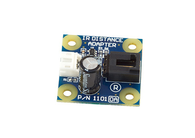
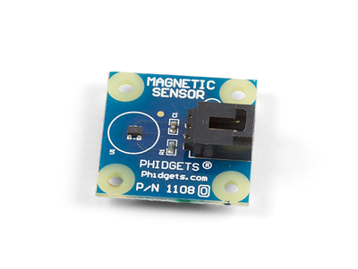
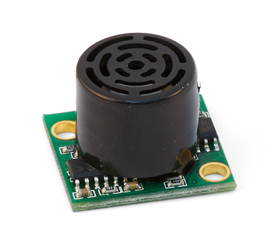
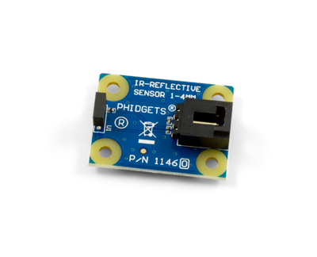
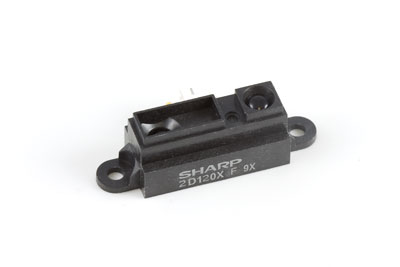

IR Distance Adapter

Product Description
The IR Distance Adapter is designed to interface Sharp IR distance sensors to an analog input on a PhidgetInterface board. Any sharp sensor with a supply voltage of 5V and an output voltage range falling within 0-5V is compatible with this adapter.
Magnetic Sensor

Product Description
These is a Hall-effect sensor that provides a voltage output that is proportional to the applied magnetic field.
MaxBotix EZ-1 Sonar Sensor

Product Description
The Sonar Sensor is a compact high performance ultrasonic rangefinder made by MaxBotix that can detect objects at a distance of 6 to 254 inches (6.45 m) with a 1 inch (25.4 mm)resolution. The sensor automatically calibrates itself when powered up.
The sensor cable that ships with the 1128 must be soldered to the sensor board; the EZ-1 sensor can then be connected to an analog port on a PhidgetInterface board and controlled through our powerful API.
IR Reflective Sensor 1-4mm

Product Description
This Reflective Sensor uses an infra-red LED and a phototransistor to measure the distance of an object between 1mm and 4mm away. This sensor can also detect the presence of an object up to 9mm away, but it won't be able to reliably measure the distance.
This sensor works best with objects with smooth, opaque surfaces. Because of this, you can also use it to differentiate between a reflective object and a non-reflective object at the same distance.
Sharp Distance Sensor (4-30cm)

Product Description
This popular sensor made by Sharp produces an analog output that varies from 3.1V at 4cm to 0.3V at 30cm.
Based on "typical values" from Sharp, the formula to translate SensorValue into Distance (the formula is only valid for a SensorValue between 80 to 530) is:
Distance (cm) = 2076/(SensorValue - 11)
This sensor can find the distance to objects that present a very narrow edge such as a wall at a very sharp angle.
Note: The output of this sensor will vary from unit to unit, and based on the characteristics of the target (reflectance, size, direction of motion, object alignment, ...). If you find that you are not getting good results with the standard formulas, you may want to derive your own formula to better characterize your situation.
Sharp Distance Sensor (10-80cm)
Product Description
This popular sensor made by Sharp produces an analog output that varies from 3.1V at 4cm to 0.3V at 30cm.
Based on "typical values" from Sharp, the formula to translate SensorValue into Distance (the formula is only valid for a SensorValue between 80 to 530) is:
Distance (cm) = 2076/(SensorValue - 11)
This sensor can find the distance to objects that present a very narrow edge such as a wall at a very sharp angle.
Note: The output of this sensor will vary from unit to unit, and based on the characteristics of the target (reflectance, size, direction of motion, object alignment, ...). If you find that you are not getting good results with the standard formulas, you may want to derive your own formula to better characterize your situation.
Sharp Distance Sensor (20-150cm)
Product Description
This popular sensor made by Sharp produces an analog output that varies from 3.1V at 4cm to 0.3V at 30cm.
Based on "typical values" from Sharp, the formula to translate SensorValue into Distance (the formula is only valid for a SensorValue between 80 to 530) is:
Distance (cm) = 2076/(SensorValue - 11)
This sensor can find the distance to objects that present a very narrow edge such as a wall at a very sharp angle.
Note: The output of this sensor will vary from unit to unit, and based on the characteristics of the target (reflectance, size, direction of motion, object alignment, ...). If you find that you are not getting good results with the standard formulas, you may want to derive your own formula to better characterize your situation.
We Provide:
- To be accessible, friendly, and helpful at all times.
- To answer the phone when you call, 24/7/365.
- Reply to your emails and support tickets within 24 hours.
- To provide timely information about new hardware.
- To provide all design documentations.
Please fulfill following request form to get more information!